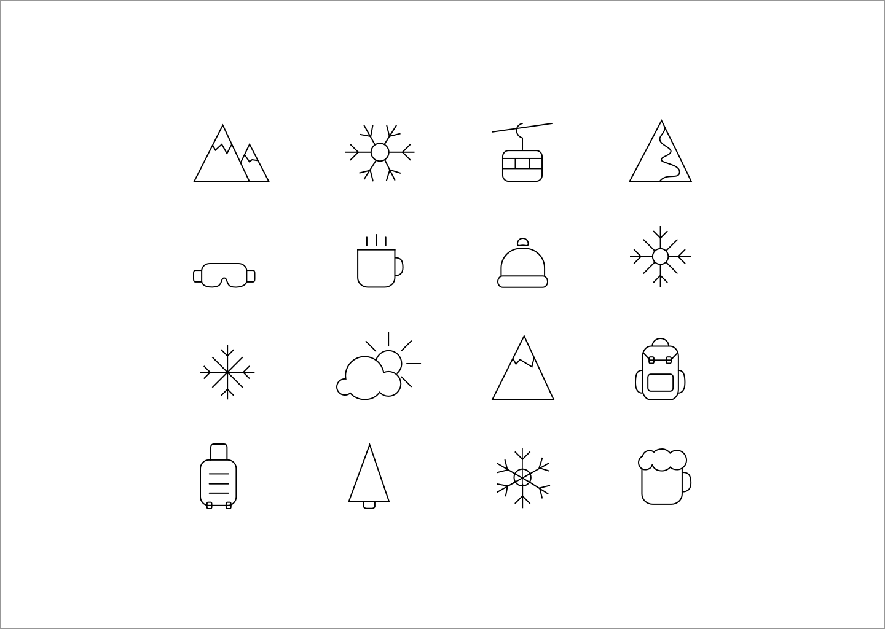
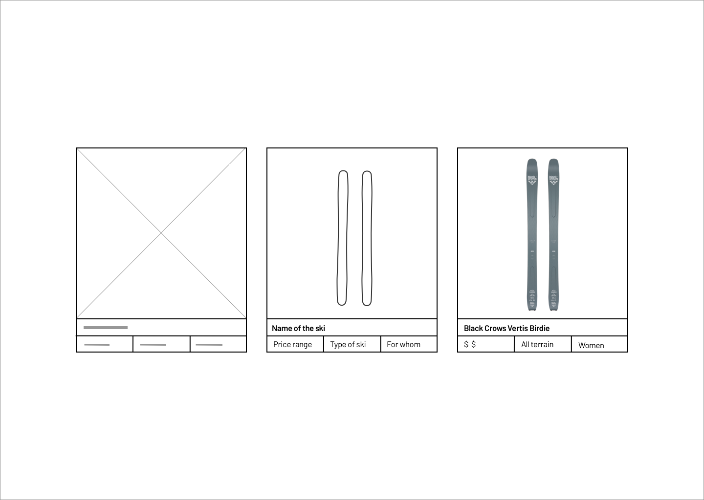
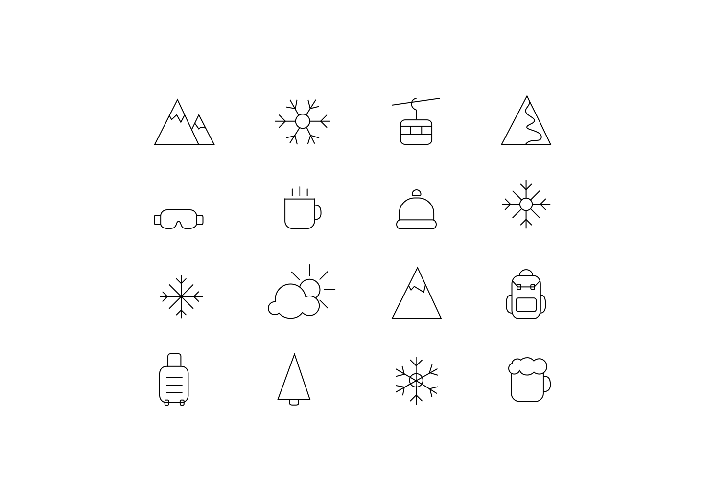
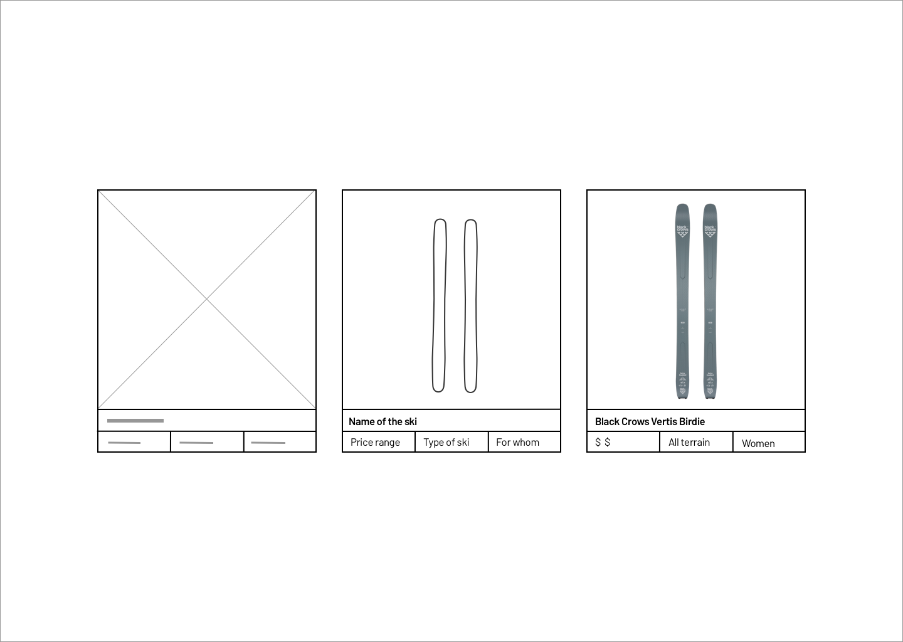
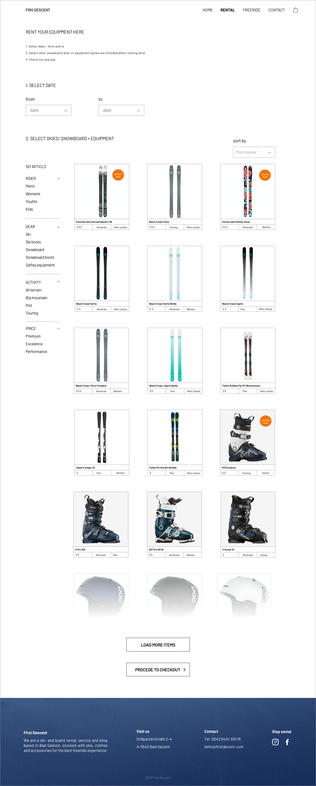
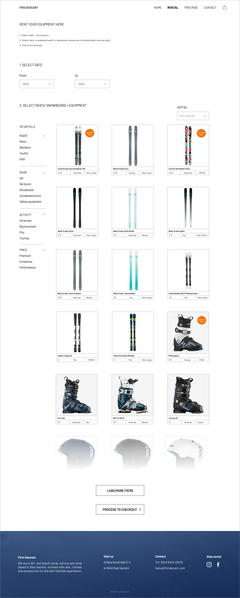

First Descent
First Descent is a ski- and board rental that I worked at during a
season of 2015/ 2016. During my season I designed and developed a
website for the shop which increased the amount of rental done over
the web.
This is a redesign of the current website.
My role
My role was to design and developed a website using different methods and technical skills. I analyzed the current design along with contemporary design trends to figure out what was working and not. Thereafter I created wireframes and a hi-fi prototype for lighter and more contemporary look and feel.
Approache
The website was developed according to conventional user interface design guidelines. It should be accessible to all users, responsive on different devices and easy to navigate. The interface should have cohesive graphic profile with an adventurous vibe and a freeride skiing feel.
- Client:
- Services:
- Year:
- First Descent
- UI, UX
- 2020
 



 
